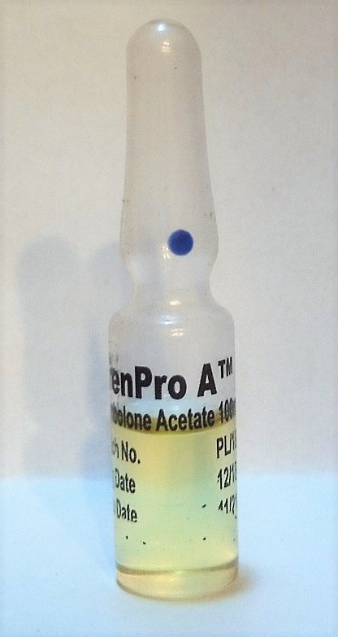
Trenbolone, as trenbolone acetate, improves muscle mass,
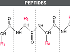
Peptides are short chains of 2 to 50 amino acids linked by peptide bonds. They play essential roles in fundamental physiological processes, acting as hormones and signaling molecules within the body, and are used in various applications, including medicines, cosmetics, and supplements, to stimulate collagen and elastin production.
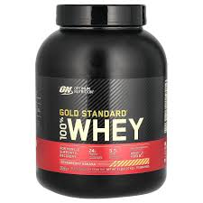
Whey protein offers several advantages that impact both internal health and external appearance. It aids muscle repair and strengthening, contributes to a slower aging process, and supports weight management. Additionally, whey protein promotes cardiovascular and bone health and bolsters the body's immune system
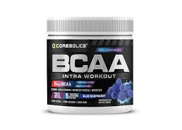
ranched-chain amino acids (BCAAs) are essential nutrients including leucine, isoleucine, and valine. They're found in meat, dairy, and legumes. BCAAs stimulate the building of protein in muscle and possibly reduce muscle breakdown. The "Branched-chain" refers to the chemical structure of these amino acids.
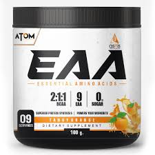
"EAA" can refer to Essential Amino Acids, which are amino acids that the body needs but cannot produce on its own, and are crucial for muscle growth and repair.
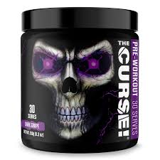
Pre-workouts are a type of multi-ingredient dietary supplement intended to boost energy, strength and/or endurance during exercise. Some pre-workouts are also formulated to help muscle recovery between workouts.
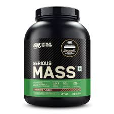
Mass gainer supplements help individuals increase calorie intake to build muscle and gain weight by providing a concentrated mix of high-calorie carbohydrates, protein, fats, vitamins, and minerals in a convenient powder form. They are especially useful for those with fast metabolisms, difficulty eating enough, or intense training schedules who struggle to meet their high calorie needs through regular meals alone
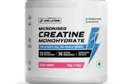
Creatine is a compound that your body naturally makes, and you also get it from protein-rich foods. It supplies energy to your muscles and may also promote brain health. Many people take creatine supplements to increase strength, improve performance and help keep their minds
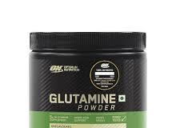
Glutamine is the most abundant amino acid found in the body. It's made in the muscles and transferred by the blood into different organ systems. Glutamine is a building block for making proteins in the body.
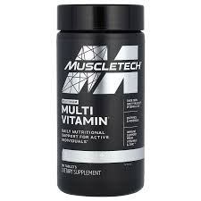
The main purpose of a multivitamin is to fill in nutritional gaps, and provides only a hint of the vast array of healthful nutrients and chemicals naturally found in food. It cannot offer fiber or the flavor and enjoyment of foods so key to an optimal diet.
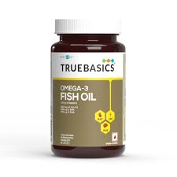
There's strong evidence that omega-3 fatty acids can significantly reduce blood triglyceride levels
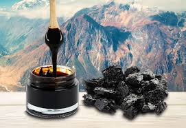
People use shilajit for Alzheimer disease, athletic performance, fractures, muscle strength,
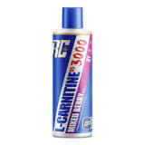
L-carnitine is a chemical that is made in the human brain, liver, and kidneys. It helps the body turn fat into energy. L-carnitine is important for heart and brain function, muscle movement, and many other body processes.
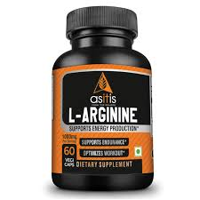
L-arginine is an amino acid that helps the body build protein. Your body usually makes all the L-arginine it needs. L-arginine is also found in most protein-rich foods, including fish, red meat, poultry, soy, whole grains, beans and dairy products. As a supplement, L-arginine can be used orally and topically
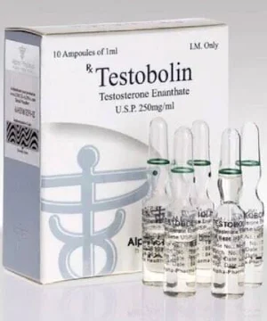
The male hormone testosterone plays an important role in the development and maintenance of typical masculine physical characteristics, such as muscle mass and strength, and growth of facial and body hair
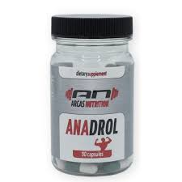
Oxymetholone, sold under the brand names Anadrol and Anapolon among others, is an androgen and anabolic steroid (AAS) medication which is used primarily in the treatment of anemia. It is also used to treat osteoporosis, HIV/AIDS wasting syndrome, and to promote weight gain and muscle growth in certain situations.
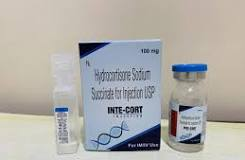
Hydrocortisone injections, also called corticosteroid injections, are used to treat swollen or painful joints, or muscle pain. You may get this type of pain after an injury
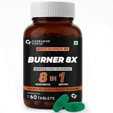
Fat burners can disrupt insulin and carbohydrate metabolism, which may result in hypoglycemia.
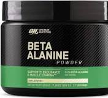
Beta-alanine is a building block of carnosine, a molecule that helps buffer acid in muscles. Beta-alanine supplementation improves performance during high-intensity exercise lasting from 1 to 10 minutes.
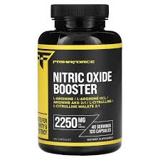
Nitric oxide (NO) is a free-radical gas molecule vital for human health, acting as a signaling molecule that promotes blood vessel dilation, neurotransmission, and immune function.